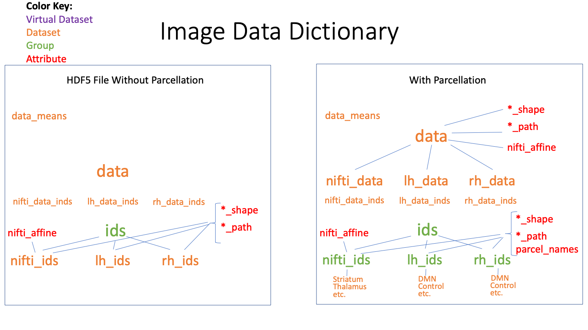
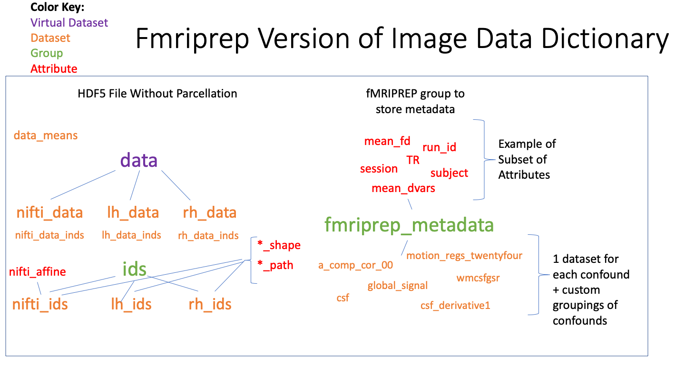

Image Data Dictionary¶
The image data dictionary (IDD) is a way of formatting neuroimaging data from mixed sources (volumetric, surface, parcellated, etc.) conveniently for neuroimaging analysis through hdf5 files. The IDD also allows for sparse representation of data sources, and conversion from hdf5 files back to standard neuroimaging file formats (i.e. nifti, gifti).
Basic Schematic (with/without Parcellation)¶
The schematic of an IDD with and without a parcellation scheme can be seen in the following figure:
{kind=link}
On the left, the example without the parcellation has a dataset named data, which can be a scalar (such as structural data) or vector (such as functional data). In this example the “data” dataset contains values from left hemisphere surfaces, right hemisphere surfaces, and volumetric sources, but can be similarly formatted from one or two of these three surfaces. The the datasets nifti_data_inds, lh_data_inds, and rh_data_inds can be used to index source specific elements of the “data” dataset, and the datasets nifti_ids, lh_ids, and rh_ids found under “ids” contain the native image indices that can be used to reconstruct nifti and gifti files from the hdf5 file without requiring external input.
The *_ids datasets also contain source specific metadata, and in the case that input parcellations are used when generating the IDD, the *_ids fields will be groups instead of datasets that contain the names of the different parcels for the source of interest and within each parcel’s dataset, the indices for the parcels constituent elements (voxel, or vertex) in native image space. In this case where a parcellation is used, each data source (*_ids) will have a metadata attribute with the list of all parcels represented in the data source.
Additional Options¶
For the purpose of denoising, it is useful to take the output of fMRIPREP and format it in an IDD. This can be any mix of sources (MNI, native space, LH, RH, etc.) and is built so that all the metadata needed for denoising is contained within the IDD.
This can be seen in the example below:
{kind=link}
Beyond the basic schematic explored earlier, the main element is a group called “fmriprep_metadata”. Within this group, there is a dataset for each of the confounds used for fMRIPREP, and other relevant metrics are stored as metadata through the group’s attributes (such as mean_fd, TR, session, subject, mean_dvars, etc.)